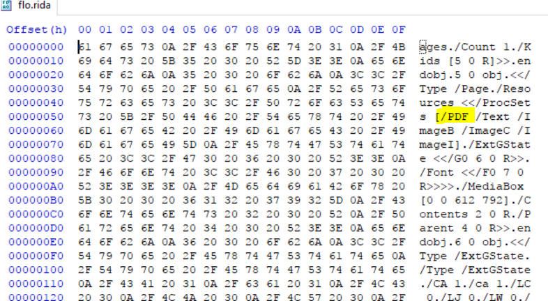
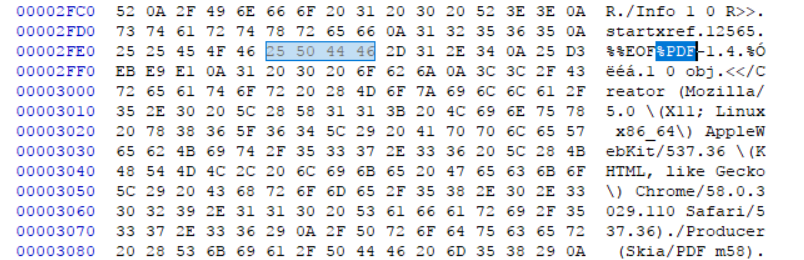

HackGT CTF Writeups
These are some writeups to the challenges I did at HackGT, a hackathon hosted by my university. If you think you know a better way to solve a problem, or just need clarification on something, don't hesitate to let me know! I'm always looking to improve and help others learn.
Table of Contents
Forensics
Problems in the forensics category involve searching for the flag in various files, images, and formats. The flag may be encoded in some interesting ways that we would have to recognize and reverse. Let's begin!
Hidden (15)
This problem gives us an image and tells us that the flag is hidden in "(not) plain sight". The image is stored on the computer as binary data, all 1's and 0's. Those 1's and 0's are formatted in a special way so that the image is interpreted by our operating system as an image file. However, not all the data in the file is completely valuable to understanding the image - it's possible to just overwrite some bytes or insert some bytes into the image and not change the file at all. For an introductory question, this is likely what was done.
We can run the "strings" Linux utility, which searches the file's binary data for sequences of bytes that are a series of characters. We know the flag will be in the format "hackgt", so we can pipe the output of strings into the "grep" program, which essentially searches the input for a given phrase.
$ strings hidden.jpg | grep "hackgt"
hackgt{can_u_lol}
CrackMePls (50)
This problem gives us a zip archive called "flag.zip" and a YouTube link. When we try to extract the archive, we seem to require a password. The title of the challenge "CrackMe" leads us to believe that we need to crack the password for the archive. This can be done with various tools, and a famous one is called "John the Ripper". This tool is hinted at in the YouTube link, as the link points to a song called "Johnny Boy". I chose to use a different tool called fcrackzip instead of John The Ripper, though you could feasibly use either. The tool simply brute forces the password of the archive until it finds one that works.
At this point, many people may try to brute force one character at a time ("a", "b", ... "aa", "ab", ... "aaa", "aab", etc.). While this could work, if the password is long then your script might not halt by the end of this century! Brute forcing takes a long time so we want to be smart about how we do it. One way we can reduce the number of keys to check is by using a dictionary. A dictionary of common passwords, such as the famous rockyou password list can be used to check the most common passwords that people use.
Make sure you download and install fcrackzip (can be done simply with "sudo apt-get -y install fcrackzip"). To run fcrackzip on the archive using rockyou.txt as the dictionary, I used the instructions found on this website.
$ fcrackzip -v -D -u -p rockyou.txt flag.zip
found file 'flag.txt', (size cp/uc 38/ 26, flags 9, chk 773b)
PASSWORD FOUND!!!!: pw == turkey
Florida (100)
The problem gives us a file called flo.rida. There is no reasonable file format that uses the .rida extension, we we need to figure out what the file format actually is. One way to do this is to look at the binary data of the file, which I do using a Windows program called HxD. If we open the file in HxD, we will see something like the following.

Notice the letters "PDF"? This format of the data in this file is very similar to how a PDF may look like. However, the file seems to be malformed, because if you just rename the file to "florida.pdf", we get an error. How do we fix this?
Every type of file has something called a file signature, which uniquely tells us what kind of file it is. Usually it is the first few bytes of the file. Searching here for the PDF file signature, we see that it is the letters "%PDF". If we search for this in the file, we notice that it's all the way near the bottom after the "EOF" instead of being at the top!

The hex data must have been re-arranged in this file. We can fix this easily using HxD - just cut all the data from "%PDF" until the end of the file, and paste it at the top. Save this file as a PDF, and open it. This time it works and we should see our flag "hackgt{you_spin_me_right_round}".